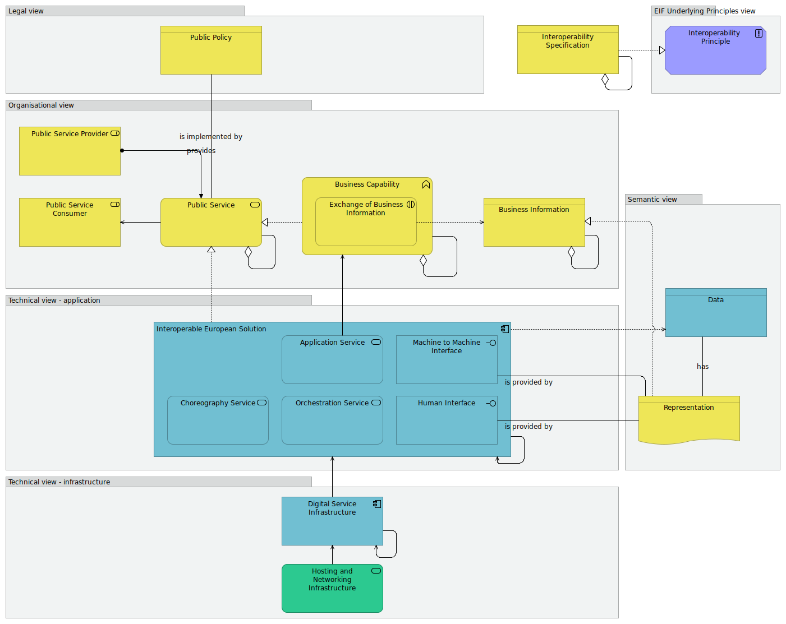

Highlevel viewpoint
(
)

The EIRA© Highlevel viewpoint models an introductory overview of the focal Architecture Building Blocks of each view. It aligns the EIRA© with the service delivery model described within the Interoperability Maturity Model (IMM), and the New European Interoperability Framework (EIF) conceptual model for public services. The ABBs included in the high-level viewpoint represent the points that link the EIRA©’s views enabling traceability between their different Architecture Building Blocks. They are not necessarily mandatory but should always be considered by a user of the EIRA© when executing one of its use cases. The EIRA© with its views provides a set of Architecture Building Blocks, important to facilitate interoperability. Each view, one for each interoperability level, is represented with the Focal Architecture Building Blocks needed to deliver an interoperable solution. These focal Architecture Building Blocks are indicated with an accented colour. In the high-level are represented the ABBs that link the EIRA©’s views enabling navigation between the different views. As such they should be considered as critical components of any interoperable public service. They are not necessarily mandatory but should always be considered by a user of the EIRA© when executing one of its use cases. Narrative: This viewpoint selects Architecture Building Blocks from the five different views highlighting the focal building blocks of the EIRA: 1. The selected Architecture Building Block of the legal view shows the [Public Policy] which is the mainspring of the solution. 2. The selected Architecture Building Blocks of the organisational view shows a [Public Policy] that is implemented by a [Public Service] which can be an aggregation of other [Public Services] serving [Public Service Consumers] and is provided by a [Public Service Provider]. The [Public Service] is realized by a [Business Capability] which can be an aggregation of other [Business Capabilities]. A [Business capability] describes key functions supporting the [Public Service]. An [Exchange of Business Information] accesses [Business Information]. 3. The selected Architecture Building Blocks of the semantic view shows that the [Exchange of Business Information] is realized by a [Representation] of [Data] which describes interactions between public administrations, businesses, and citizens. 4. The selected Architecture Building Blocks of the technical views shows that an [Interoperable European Solution] supports one or more [Public Services] and lets consumers access it via [Machine to Machine Interface] and/or [Human Interface]. An [Interoperable European Solution] exposes one or more [Application Services] via its [Machine to Machine Interfaces] and/or Human Interfaces]. It makes use of [Orchestration Services] and [Choreography Services]. The [Interoperable European Solution] uses [Digital Service Infrastructure] which uses a [Hosting and Networking Infrastructure]. It can also use other [Interoperable European Solutions]. 5. The selected Architecture Building Blocks of the EIF Underlying Principle view show that [Interoperability Specifications] realise [Interoperability Principles], the general intended properties used to achieve interoperability. The interoperability Specifications can be used to define the interoperability aspects for any of the Architecture Building Blocks.
dct:title
Integrated Public Service Governance viewpoint
Interoperable European Solution
Machine to Machine Interface
Human Interface
Orchestration Service
Application Service
Choreography Service
Data
Representation
Digital Service Infrastructure
Hosting and Networking Infrastructure
Public Service
Business Capability
Exchange of Business Information
Business Information
Public Service Provider
Public Service Consumer
Public Policy
Interoperability Specification
Interoperability Principle